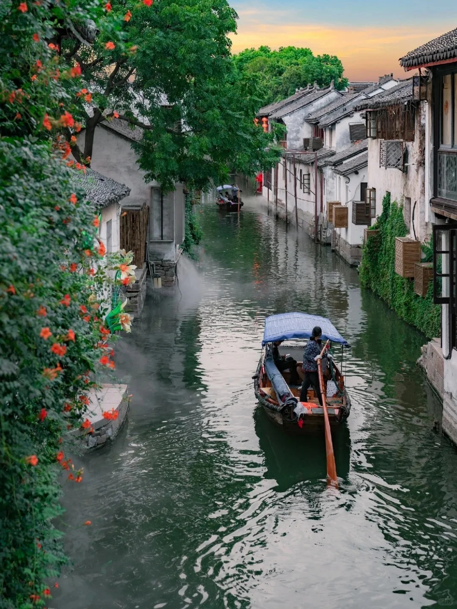

Zhouzhuang and Tongli are famous water towns close to Suzhou. Small rivers run between houses. People take wooden boats to travel on the water.

Stone bridges and white walls with black roofs are their special look.